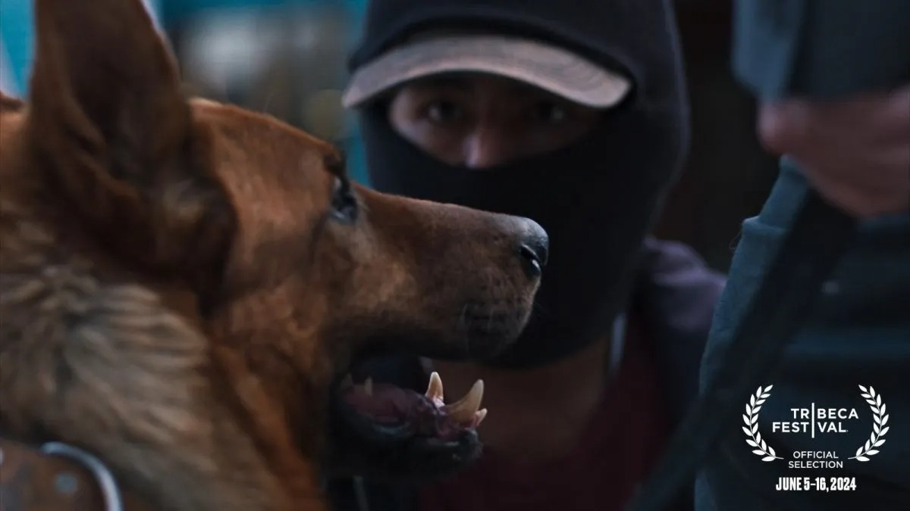

En el corazón de Bolivia, El Ladrón de Perros narra la historia de un hombre que, tras una serie de malas decisiones, se encuentra con un perro que lo ayudará a descubrir el verdadero valor de la amistad y la lealtad. Martín, un joven lustrabotas de 14 años trabaja en las calles de La Paz. En un acto desesperado, decide robar el perro de su mejor cliente, un solitario sastre a quien Martín empezó a imaginar como su padre. Esa es la trama de El ladrón de perros, película nacional que se estrenará en junio en la selección oficial del Festival de Cine de Tribeca. "Estrenar nuestra película en el prestigioso festival de Tribeca representa un hito significativo para nosotros. No solo nos brinda una invaluable visibilidad en los medios y ante posibles compradores y distribuidores, sino que también nos posiciona en el escenario mundial del cine contemporáneo. Nuestro objetivo es que la película llegue a la mayor cantidad de territorios posible. El hecho de estrenar en un festival de renombre como Tribeca nos abre las puertas a plataformas de distribución de alcance global", indicó el productor del filme, Álvaro Manzano.
Próximamente en cines de Bolivia el 17 de octubre de 2024. ¡No te la pierdas!